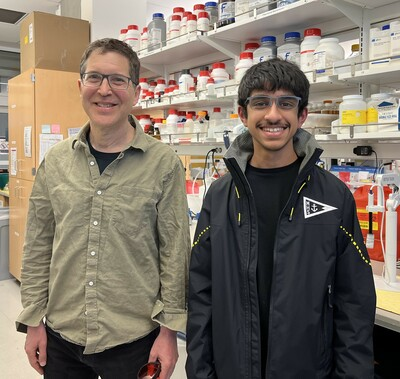

Experience
Both begin with an idea and grow through collaboration and action. I have learned that real leadership is less about titles and more about creating space for others to grow and succeed.
-

MAYO CLINIC, INTEGRATIVE BIOLOGY OF ADVANCED LIVER DISEASE LAB (Dr. Scott Cao), Rochester, MN, July 2025 - present
- Invited to highly selective mentorship program at Mayo Clinic based on previous experience.
- Member of team conducting liver fibrosis and cirrhosis research. Identifying promising domains for study and directing computational protein modeling for the team.
- Developed and pursuing work on novel computational frameworks to design novel functional proteins based on denoising diffusion probabilistic models and new genetic algorithms, which could accelerate drug discovery and help design custom drugs and enzymes.
- Currently preparing work for publication.
- Competitive (< 2% acceptance rate) internship program with stipend at the Regeneron Genetics Center.
- Completed a bioinformatics research project applying Big Data techniques to patient genomic and health care data to determine the correlation between phenotypic and genomic markers of cardiomyopathy, which could predict cardiomyopathies before they are diagnosed. Identified 13 unknown genetic correlations for cardiomyopathies.
- Learned to use artificial intelligence, machine learning, and natural language processing techniques on large data sets.
- Found key insights and trends, made predictions, and created meaningful data visualizations.
- Classwork & two weeks in “clean room” focused on thin film resistors, solar cells, and deposition techniques.
- Investigated microscopic structures for materials science, engineering, science, and forensics applications.
- Learned to use scanning electron microscope (SEM) and other microscopes.
- Selected into program to spend time in various labs at Medtronic.
Visiting Researcher
Independent Researcher in Mentor Program
Big Data, Machine Learning, and Their Real World Applications Seminar, Prof. Benjamin Kinsella
Nanoscience and Engineering Pre-College Program, Dr. Greg Walker
Microscope Summer Program, Dr. Lifeng Dong